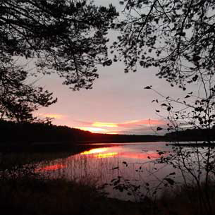

Райконкоски
 Вы не были в посёлке Райконкоски? Что - правда не были? Даже проездом? - Вообще ничего не слышали о Райконкоски? При виде названия решили, что это где-то в Финляндии? Ну что ж - тогда вам остается только посочувствовать. Хотя с другой стороны, можно за вас и порадоваться, ведь путешествие в наши удивительные края ещё только предстоит. Мой поселок уютно расположился на каменистых горках и в пойменных низинах вдоль берегов бурной карельской речки Уксунъёки, стремительно несущей свои чистые воды в самое большое озеро Европы. Окрестности поселка наполняют лёгкие неповторимым запахом просторных сосновых боров, запахом, способным одолеть всякую простуду и зарядить созидательной энергией подлинной доброты и искреннего человеколюбия. Впрочем, это касается только тех, кто способен увидеть целый мир в песчинке с уксинского пляжа, услышать голос прошлого в шуме набегающих на беззащитный берег волн, почувствовать себя неотрывной частью чего-то несоизмеримо более великого, окуная теплую руку в прохладную воду, которой суждено раствориться в топящей горизонт Ладоге; кто не разучился восхищаться простой, близкой, нерукотворной и потому ни к чему, кроме уважения, не обязывающей красоте. А красота эта мудро лишена природой возможности травмировать, превращаться в интеллектуальное стихийное бедствие. И этим природная красота интересней сделанного человеческими усилиями и потому понуждающего к соответствию, как бы говорящего каждым архитектурным шедевром, каждой гениальной картиной, каждой берущей за душу музыкальной композицией: "Ты так не можешь", "Мы тебя превосходим", "Ты ничтожен". С природой же просто бесполезно соревноваться, поэтому мысли о собственном убожестве никогда не приходят в голову, когда ты, например, жаришь хлеб на выточенной из березовой веточки палочке или выпускуешь в воду трепещущую в руке плотвицу. Лес заботливо обеззараживает голову, настраивая на созидание, нашептывая шуршанием тростника рецепты внутренней гармонии. В лес можно прийти с любыми проблемами, он сгладит любое одиночество, снимет напряжения с любых, даже самых притупленных городом глаз. Опять же, только если ты приходишь туда, как в гости к старому другу, как в отчий дом, а не как ищущий Эльдорадо конквистадор в селение аборигенов. И впавду, ну какая может быть безысходность, когда так переливисто щебечет свои йодли счастливая птаха, какие такие неразрешимые проблемы не дают тебе жить, когда в двухстах метрах от тебя на дороге сидит серый заяц, а потом, заметив тебя, пускается наутёк, какая усталость от жизни, когда одышливо забираешься на пригорок, а там полным-полно черники? И если вы все-таки не чужды всего этого, если город не перековал вас окончательно, не переварил, не купировал органы чувств, то где, как ни в Карелии, где как ни в наших райконкосских краях искать подлинного отдохновения? Вдоль левого берега реки, то неохотно взбираясь в крутые горы, то опасливо сползая с них, тянется узенькая лесная дорожка. Почти на всем её протяжении видны широкие разливы, такие, что несведущий человек с легкостью примет их за озеро. Видны, потому что по берегам реки растут светлые спелые и просторные сосняки, а не, как это часто бывает, темные мшистые ельники, встающие непроницаемой стеной. И так километров десять. Десять километров стройных, корабельных сосняков на живописном берегу широкой речки! - Удивительно красивые места. Кое-где даже есть пляжы с песком, мелким и жёлтым, как на тропических островах. Дно совершенно замечательно подходит для купания. В реке водятся многие вкусные и хитрохвостые рыбы, даже грешным делом можно форелинку поймать, не говоря уже о стандартных окуне, плотве, щуке, салаке... В августе хорошо ловятся усатые раки. Искатели жемчужин могут заняться потрошением пресноводных мидий. Хотя, честно признаться. чтобы кто-то находил жемчужинку, - такого еще не слышал. Само собой, в лесах много разных вкусных и полезных ягод. Тут вам и морошка, и черника, и брусника, и малина, и клюква. Любителям исторического туризма можно предложить блуждания по старым финским хуторам. Интересно бывает посмотреть, как жили люди, уважающие свою землю. Неподалеку от поселка на Майсульском разливе Уксы есть полуостров, который в народе называют "остров шпиона". В 1939-1944 гг. там находась "финская школа бойскаутов Nujakallinna", о чём можно узнать из поставленной финнами мемориальной таблички. Отлично сохранились фундаменты нескольких зданий, огнеупорные кирпичи, фрагменты стен, подвалы. Подо мхом валяются куски отличной черепицы. В далеком детстве я даже нашел там старую гильзу, уж не знаю - нашу или финскую. На краю полуострова, ближе к берегу много старых окопов, есть даже блиндажи с сохранившимися бревенчатыми стенами. В общем, есть на что посмотреть. Тут же неподалеку неудачливые рыбаки могут купить красную рыбу у рыбразводчиков. Но хорошего понемногу. Писать о Райконкоски и тех потрясающих местах, которые находятся неподалеку, можно до бесконечности, ибо места, где ты вырос, всегда особенно ценны для тебя. Но это тот случай, когда хочется, чтобы и другие, побывав здесь, навсегда сохранили любовь к прекрасным творениям скудной и тем прекрасной карельской природы.